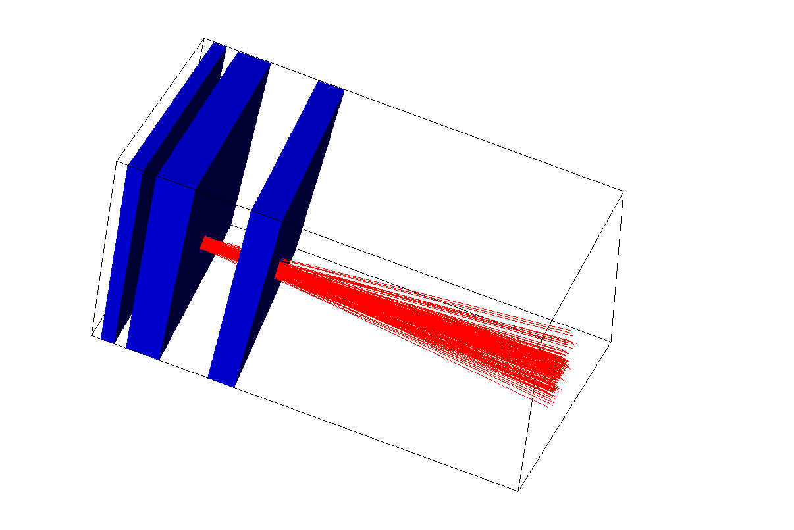
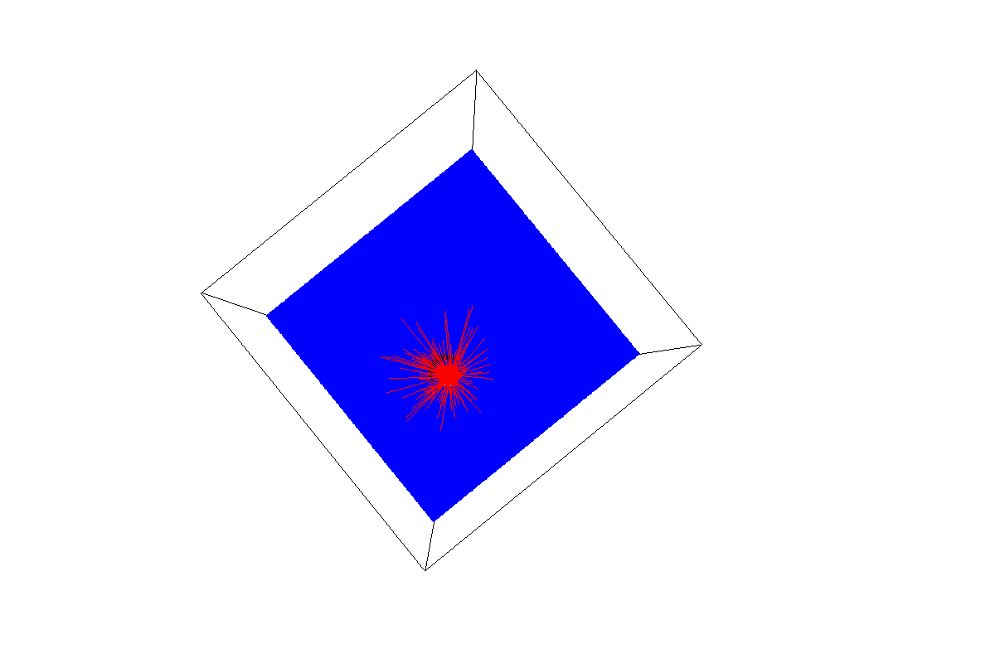
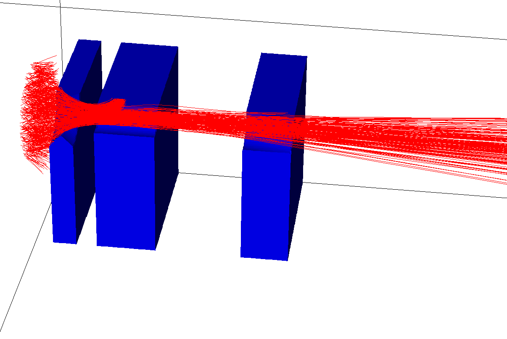
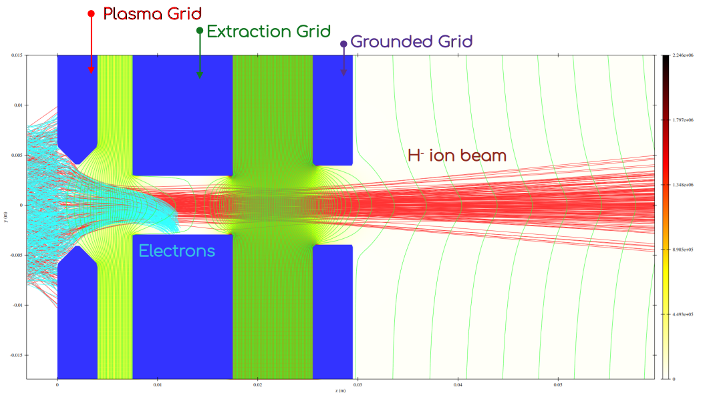

01
3D Projection - 1
Numerical visualization of the extracted ion beam as it propagates through the simulated beamline.
COMPUTATIONAL RESEARCH
Three-dimensional numerical studies of charged-particle beam transport, space-charge interactions and beam evolution through accelerator systems.
SIMULATION WORK
Particle-based simulations provide a computational approach for investigating the evolution of extracted ion beams and the influence of space-charge forces during transport.

Numerical visualization of the extracted ion beam as it propagates through the simulated beamline.

Simulation of the collective electrostatic interaction within the charged-particle beam during transport.

Three-dimensional particle trajectories showing the evolution of the beam envelope and individual particle motion along beamline.

Cross-sectional view of the Gridset, along with the trajectories of H- ion beam (in red lines), and the electrons (in yellow lines)
RESEARCH CONTEXT
These simulations form part of my work on negative hydrogen ion beam transport. By resolving the interactions between charged particles and the surrounding electromagnetic fields, numerical modelling can provide insight into beam expansion, divergence and space-charge effects that are difficult to isolate experimentally.